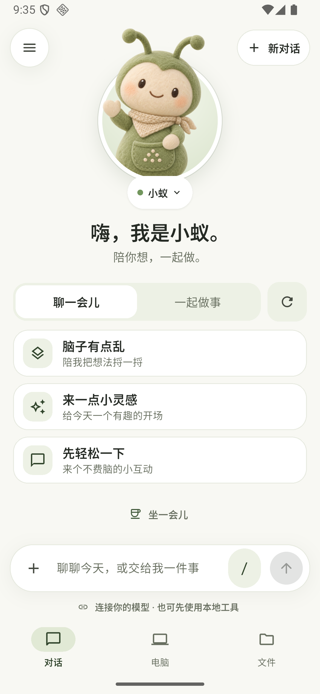
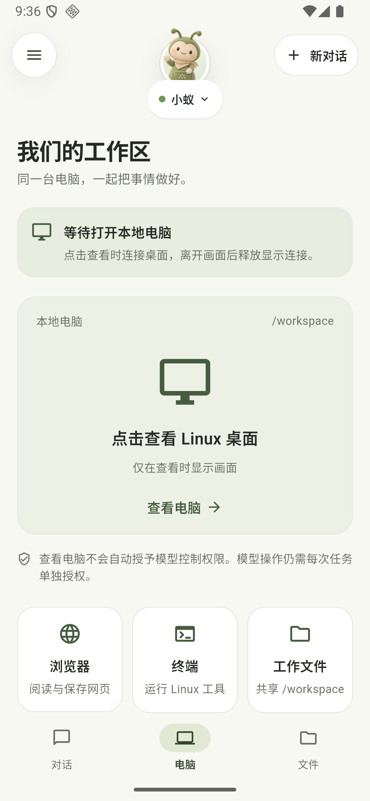
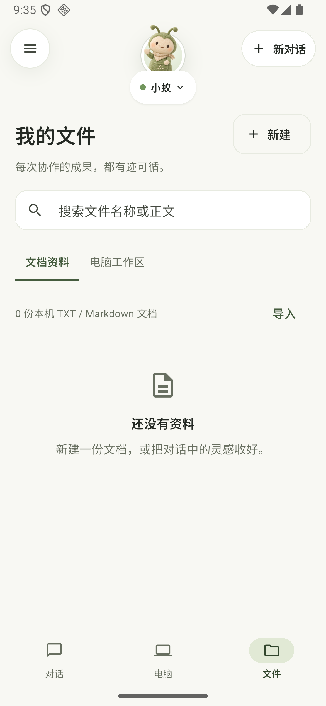

和小蚁一起，
把事情做完。
以对话为入口，在手机里与模型共用一台 Linux 电脑。
小蚁是你在手机上的个人智能体搭子。PerAnt 目前是 Android 开发预览版，还不是完整发布的产品。

三个入口
对话、电脑、文件，都在一部手机里
下面是 0.9.0 开发预览版的真实截图，可以切换查看。
01 · 对话
从一句话开始
用平常说话的方式，告诉小蚁你想做什么。它会先说清楚打算怎么做；需要动用 Linux 工具时，会先请你授权，再一步步执行。
- 对话是所有事情的入口
- 结构化 Shell 命令逐条确认
- 模型 API 使用你自己配置的 Key

02 · 电脑
需要时，打开我们的电脑
小蚁和你共用手机里的一台 Linux 电脑，基于 PRoot 与 Alpine，带 Xfce 桌面和终端。你可以点开查看它在做什么；任务期间也可以申请接管，接管后模型会停止操作。
- 只在你点开查看时才连接桌面画面
- 离开查看页后停止持续取帧
- 任务期间可申请接管，接管后模型停止操作

03 · 文件
文件与成果留在手边
保存下来的网页文字和本机文档都在手机里，随时可以打开查看，文档的历史版本记录在 SQLite 中。本机文档与 Linux 里的 /workspace 分开管理，目前尚未自动同步。
- 网页正文可以保存下来
- 本机文档版本记录在 SQLite 中
- 与 Linux /workspace 分开管理，尚未自动同步
工作方式
每一步，你都知道发生了什么
-
对话
说出你的需求，小蚁理解后给出做法。
-
明确授权
要用到工具时，先征得你的同意。
-
使用 Linux 工具
在手机里的 Linux 环境中执行，过程可查看。
-
查看并保留成果
结果留在文件里，随时回来查看。
- 可申请接管
- 任务期间可以申请接管，接管后模型停止操作，由你亲手接着做。
- 结构化 Shell 命令逐条确认
- 结构化 Shell 命令会逐条请你确认。你授权桌面控制后，桌面内的键鼠操作和终端输入属于这次桌面控制的范围，不再逐条弹出确认。
- API 自备 Key
- 模型需要你自行配置兼容的 API 与 Key，PerAnt 不内置模型服务。
当前能力
0.9.0 预览版里已经有的
以下能力已在开发预览版中提供，仍在继续打磨。
- Android PRoot + Alpine在手机里运行的 Linux 用户空间
- Python可直接运行脚本
- 终端查看命令与输出
- Xfce 桌面图形化的 Linux 桌面
- LibreOffice在 Linux 中处理办公文档
- Android WebView在 App 内浏览网页
- 网页文字保存把网页正文存到手机里
- SQLite 文档版本记录本机文档的历史版本
Android 预览版
把小蚁装进手机
下载 0.9.0 Android 开发预览版，按系统提示安装。这个调试包包含本地 Linux 与办公组件，约 518 MiB；首次启动还需要解包空间。
同一发布页提供匹配的 PerAnt 源码、三卷 Linux 对应源码和校验清单。低配实体手机仍待验证，iPhone 安装包尚未提供。
- 版本
- 0.9.0 debug
- 架构
- ARM64
- 最低系统
- Android 10（API 29）
- 文件大小
- 543,584,034 字节
- SHA256
-
df28a19867704134053f4d79dd78e10d8d05f18fd25227d2952489b33e06a167
开发计划
接下来要做的事
计划按方向排列，不标注预计日期。详细进度见 TASK_PLAN.md。
- 已完成 0.9 界面
- 接下来 真实 API 协作与低内存启动优化
- 计划中 本地小模型
- 计划中 后台恢复
- 计划中 混合检索与记忆
- 计划中 内容工作流
- 计划中 iOS 运行时验证
iOS 目前只有共享代码和图标，不提供 IPA 安装包。
常见问题
先说清楚的几件事
可以完全离线使用吗？
现在还不行。本地小模型尚未接入；对话依赖云端模型 API，需要你自己配置 Key。
里面是一台虚拟机吗？
不是。PerAnt 使用 PRoot 运行 Linux 用户空间，与 Android 共用同一个内核，并不是已经证明的强隔离环境。
哪些手机可以用？
需要 ARM64 架构、Android 10 及以上的手机。低配置真机尚待验收；在 3GB 内存的模拟器上，冷安装曾出现超时。
使用什么许可证？
PerAnt 以 GPL-3.0-only 发布，允许在遵守许可证的前提下商用。许可证本身并不能保证禁止他人套壳销售。